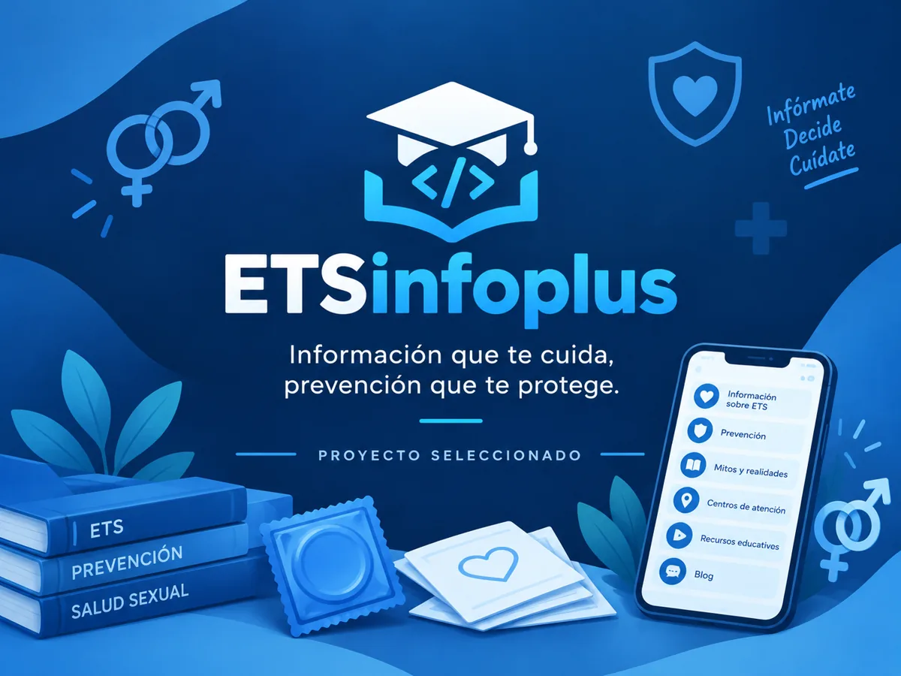

Proyecto académico en equipo
ETS InfoPlus
ETS InfoPlus es una plataforma educativa sobre salud sexual y prevención de ITS, creada en equipo. Mi participación fue la búsqueda y selección de la información, la presentación del proyecto y el desarrollo en HTML y CSS. El sitio usa Bootstrap 5 para adaptarse a celulares, tabletas y computadores.
Ver sitio del proyectoProyecto realizado en equipo. El contenido es educativo, no ofrece diagnósticos y los recursos externos requieren internet.